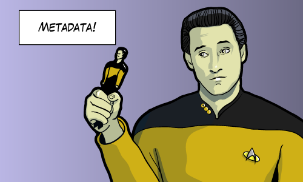

QueryDSL
Clean way to have SQL in your java applications
Agenda
- SQL in Java
- Problems
- Solution
- Problems with the solution
Standard JDBC
Class.forName("oracle.jdbc.driver.OracleDriver");
// or you can use:
Connection conn = DriverManager.getConnection(
"jdbc:oracle:oci8:@myawesomeserver", "mite", "mitreski");
Statement stmt = conn.createStatement();
ResultSet rset = stmt
.executeQuery("select * from Person");
while (rset.next()){
System.out.println(rset.getString(1));
}
rset.close();
stmt.close();
conn.close();
JDBC Templates
public Person findByPersonId(int personId){
String sql = "SELECT * FROM PERSON WHERE PERSON_ID = ?";
Person person = (Person)getJdbcTemplate().queryForObject(
sql, new Object[] { personId }, new PersonRowMapper());
return person;
}
JDBC Templates
import java.sql.ResultSet;
import java.sql.SQLException;
import org.springframework.jdbc.core.RowMapper;
public class PersonRowMapper implements RowMapper {
public Object mapRow(ResultSet rs, int rowNum) throws SQLException {
Person person = new Person();
person.setPersonId(rs.getInt("PERSON_ID"));
person.setName(rs.getString("NAME"));
person.setAge(rs.getInt("AGE"));
return person;
}
}
Object Relational Mapping
The problems are the same
- You need to know the query syntax
- You need to know the domain classes, properties and relations
- Very easy to make a mistake
What about Criteria API?
CriteriaQuery query = builder.createQuery();
Root men = query.from( Person.class );
Root women = query.from( Person.class );
Predicate menRestriction = builder.and(
builder.equal( men.get( Person_.gender ), Gender.MALE ),
builder.equal( men.get( Person_.relationshipStatus ),
RelationshipStatus.SINGLE ));
Predicate womenRestriction = builder.and(
builder.equal( women.get( Person_.gender ), Gender.FEMALE ),
builder.equal( women.get( Person_.relationshipStatus ),
RelationshipStatus.SINGLE ));
query.where( builder.and( menRestriction, womenRestriction ) );
Why don't we use string concatenation?
String sql = "SELECT * PERSON WHERE PERSON_ID="+
id+" AND ...";
Exploits of a mom

Last hope
How is QueryDSL better?
- Domain model specific type-safe query language
- Compile time query validation, since it's type safe
- Instant feedback on query errors
- Syntax looks like SQL
- Great for dynamic query building
And more?
- Supports JPA, JDO, Hibernate, Lucene
- Also SQL, Java Collections, Hibernate search, MongoDB
- License is Apache 2
QueryDSL where have you been?
- Development started in 2007 with public releases since 2008
- Talks about makeing into a standard API
Basics
- Variables
// default variable for person
QPerson.person
// custom variable for Person ex for use in SubQuery or selfjoin
new QPerson("myPerson2")
JPAQuery, HibernateQuery, SQLQueryImpl ...
The signature
from
Query sources
innerJoin, join, leftJoin, fullJoin, on Join elements
join(source, alias) [.on(source.prop.eq(alias.prop))]
where
Query filters, varargs for intersection (and) and(), or(), allOf(), anyOf()
And the other SQL elements
groupBy
Group by arguments in varargs form
having
Having filter of the "group by” as an varags array of Predicate expressions.
orderBy
Ordering of the result as an varargs array of order expressions. asc() and desc() on numeric, string and other comparable expression
limit, offset, restrict
Paging of the result
Limit for max results and Offset for skipping rows and
Restrict for defining both in one call
Code Example
QPerson person = QPerson.person;
JPAQuery query = new JPAQuery(entityManager);
List persons = query.from(person)
.where(
person.firstName.eq("John"),
person.lastName.eq("Doe"))
.list(person);
The generated SQL
select person from com.acme.Person person
where person.firstName eq = ?1 and person.lastName = ?2
Find all persons and ordered by last name and age
query.from(person)
.orderBy(
person.lastName.asc(),
person.age.asc())
.list(person)
Find all persons and ordered by last name and grouped by age
query.from(person)
.groupBy(person.age)
.orderBy(person.lastName.asc())
.list(person.lastName, person.age, person.count())
Tuples
List tuples = query
.from(person)
.list(new QTuple(
person.lastName,
person.age));
for (Tuple tuple : tuples){
// Typed access to mapped query results!
String namesAndAge = tuple.get(person.firstName) +
" is " + tuple.get(person.age) + " old";
System.out.println(namesAndAge);
}
But sometimes I need select inside a select inside a select inside...
Subqueries
//Get persons with max child count
QPerson parent = new QPerson("parent");
query
.from(person)
.where(person.children.size().eq(
new JPASubQuery().from(parent)
.uniqueResult(parent.children.size().max())
)).list(person);
What about those DTO's, I still need to map them manualy or?
Constructor projection
// DTO class with @QueryProjection constructor annotation
public class PersonView {
String name;
Boolean awesome
@QueryProjection
public PersonInfo(Boolean awesome, String name) {
this.awesome = awesome;
this.name = name;
}
}
List infos =
query
.from(person)
.list(
new QPersonView(person.age.gt(18),person.name)
);
Update
long updatedRowCount =
new JPAUpdateClause(getEntityManager(), person)
.set(person.firstName, "Shake")
.where(person.lastName.eq("Harlem"))
.execute();
Delete
long updatedRowCount =
new JPADeleteClause(getEntityManager(), person)
.where(
person.age.gt(101))
.execute();
Dynamic queries with BooleanBulder
BooleanBuilder crazyConditions = new BooleanBuilder();
for (String name : allowedNames) {
crazyConditions.or(person.firstName.like(name));
}
crazyConditions.or(person.age.gt(2));
query.where(crazyConditions);
What is the magic in creating all this Q* classes
It's all about the meta data
Maven + JPA
<build><plugins><plugin>
<groupId>com.mysema.maven</groupId>
<artifactId>maven-apt-plugin</artifactId>
<version>1.0.3</version>
<executions>
<execution>
<goals><goal>process</goal></goals>
<configuration>
<outputDirectory>target/generated-sources/java</outputDirectory>
<processor>com.mysema.query.apt.jpa.JPAAnnotationProcessor</processor>
</configuration>
</execution>
</executions>
</plugin></plugins></build>
Maven + SQL
<build><plugins><plugin>
<groupId>com.mysema.querydsl</groupId>
<artifactId>querydsl-maven-plugin</artifactId>
<version>${querydsl.version}</version>
<executions><execution>
<goals><goal>export</goal></goals>
</execution></executions>
<configuration>
<jdbcDriver>org.somdDB.jdbc.EmbeddedDriver</jdbcDriver>
<jdbcUrl>jdbc:derby:target/demoDB;create=true</jdbcUrl>
<packageName>com.myproject.domain</packageName>
<targetFolder>${project.basedir}/target/generated-sources/java</targetFolder>
</configuration>
...
Usage in Java collections
QCat cat = new QCat("cat");
for (String name : from(cat,cats)
.where(cat.kittens.size().gt(0))
.list(cat.name)){
System.out.println(name);
}
Summary
QueryDSL is awesome but...
... if you depend highly on a DBA then its not usefull, otherwise ...
It should be part in almost any project